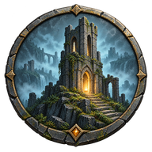

O que ele faz
Mundo compartilhado
O mundo fica salvo no servidor e no PC de cada um. Ninguém precisa deixar o jogo aberto para o outro jogar.
Mods na hora
Sem gasto de stamina, sem dano de queda, voo, primeira pessoa. Liga e desliga direto no app, até com o jogo aberto.
Sempre atualizado
Quando sai versão nova dos mods ou do app, ele avisa e instala sozinho assim que você fecha o jogo.
Como começar
- Baixe e abra o appEle acha o Enshrouded e os seus mundos sozinho.
- Entre com a SteamO navegador abre na página oficial da Steam; você confirma e volta.
- Compartilhe ou cole o códigoUm escolhe o mundo e manda o código; o outro cola e o mundo aparece no jogo.

Se os dois jogarem separados, nada se perde
O app mostra as duas versões e você escolhe qual segue. A outra fica guardada no histórico do mundo.
O app ainda não tem assinatura digital. Na primeira vez, o Windows pode mostrar "O Windows protegeu o computador": clique em Mais informações e depois em Executar assim mesmo.